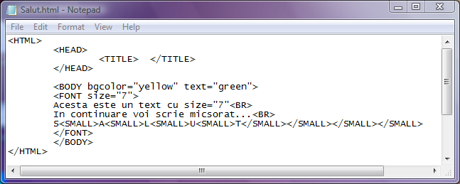
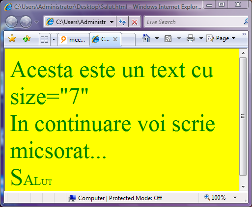

Scriere micsorata
Pentru ca, pornind de la o dimensiune prestabilita a fonturilor sa le micsoram cu cate
o unitate, avem la dispozitie perechea de etichete SMALL si respectiv /SMALL. Toate fonturile
aflate in interiorul acestor etichete vor avea dimensiunea micsorata cu o unitate fata de
fonturile anterioare acestei etichete. In continuare vom exemplifica modul de actiune a
etichetelor de micsorare a dimensiunii fonturilor:


Inapoi la Formatare fonturi...